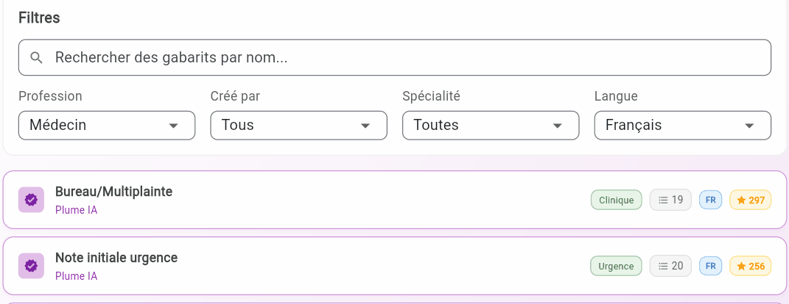
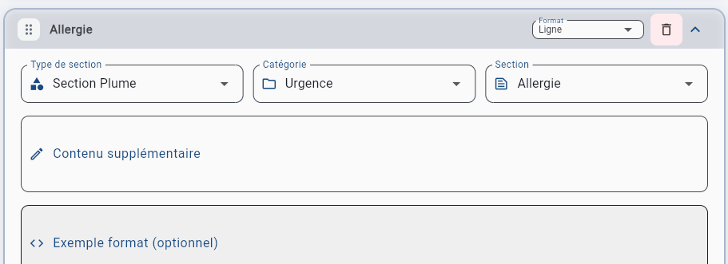

Informations supplémentaires
Conseils pratiques, paramétrages avancés et erreurs fréquentes à éviter.
Conseils selon votre point de départ
Rechercher un gabarit existant
Si vous ne trouvez pas le gabarit souhaité parmi la liste :
- Faites une recherche par profession, spécialité ou mot-clé.

Générer depuis un exemple
Si l'analyse de votre exemple donne des résultats décevants :
- Vérifiez que votre PDF est un document textuel et non une image scannée.
- Plus votre exemple contient du contenu réel et détaillé, meilleure sera l'analyse. Un squelette vide donnera de moins bons résultats.
Rappel : Quel que soit le point de départ choisi, le gabarit généré est toujours entièrement modifiable : sections, ordre, contenu, format, etc.
Sections Plume IA vs sections personnalisées
| Section Plume IA | Section personnalisée |
|---|---|
| Préconfigurée et optimisée. Le champ Contenu supplémentaire vous permet d'affiner sans repartir de zéro. | Entièrement vide. Le champ Contenu est indispensable. Sans directives, Plume ne sait pas ce que doit contenir la section. |

Techniques avancées pour le champ Exemple format
Technique 1 — Placeholders avec crochets [ ]
Les crochets signalent à Plume IA où insérer les informations extraites de la transcription.
Date : [Date]
Patient : [Nom] [Prénom]
Âge : [X] ans
Poids : [X] kg
Patient : [Nom] [Prénom]
Âge : [X] ans
Poids : [X] kg
Résultat dans la note générée :
Date : 15 janvier 2026
Patient : Tremblay Marie
Âge : 45 ans
Poids : 62 kg
Patient : Tremblay Marie
Âge : 45 ans
Poids : 62 kg
Technique 2 — Choix multiples avec la barre oblique /
Pour des évaluations avec options prédéfinies. Plume IA choisit l'option la plus appropriée selon la transcription.
Aspect physique : [Soigné/Négligé/Bien habillé]
État général : [Bon/Moyen/Altéré]
Coopération : [Excellente/Bonne/Difficile/Absente]
État général : [Bon/Moyen/Altéré]
Coopération : [Excellente/Bonne/Difficile/Absente]
Attention : Ne mettez pas d'espaces autour du /. Écrivez
Bon/Moyen et non Bon / Moyen.
Conseils d'optimisation
Ce qui fonctionne bien
- Remplissez le champ Exemple format si vous avez un format précis en tête. C'est le moyen le plus efficace !
- Soyez précis dans le champ Contenu. "Inclure les médicaments avec posologie et fréquence" donne de meilleurs résultats que "Inclure les médicaments".
- Utilisez les Directives générales pour les règles transversales : ton, abréviations, terminologie préférée. Attention aux contradictions entre les instructions dans vos directives générales et celles de vos sections (contenu) !
- Pour les sections Plume IA, ajoutez seulement ce qui manque dans le Contenu supplémentaire. C'est déjà optimisé, profitez-en !